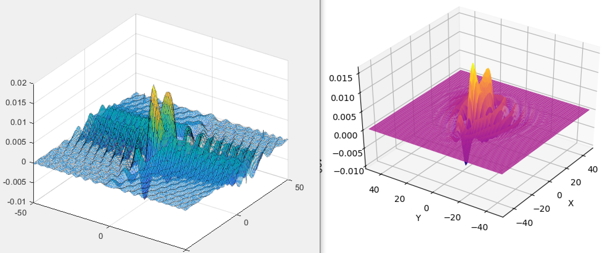

[Apr 2023 - ] Fermi1 Experiment (ultracold mixture of Sodium-23 and Potassium-40), Zwierlein Group at MIT.
Exciting details to come!
[Aug 2021 - Apr 2023] BEC1 Experiment (strongly interacting fermionic superfluids of Lithium-6), Zwierlein Group at MIT.
DAMOP 2022 abstract.
Hydrodynamic Properties of the Unitary Fermi Gas: The unitary Fermi gas is a paradigmatic model for other strongly interacting Fermi systems,
from atomic nuclei to neutron stars, and can be efficiently realized with ultracold atoms near a Feshbach resonance.
Strong interactions and fermion antisymmetry render theoretical predictions highly challenging, in particular for transport properties such as density, spin, heat and momentum transport.
Here, we prepare a spin-balanced, homogeneous gas of 6Li atoms at unitarity, trapped within a homogeneous box potential that removes complications from non-uniform density.
We observe the response of the gas to local density and temperature perturbations in both the normal and superfluid phases and extract the associated diffusivities.
In the degenerate regime, and near the superfluid critical temperature, these diffusivities attain a Heisenberg limit.
This behavior contrasts with that expected for Fermi liquids, where instead diffusivities would strongly rise at low temperatures due to Pauli blocking.
Our precision measurements of transport coefficients can serve as a benchmark for many-body theories of strongly interacting fermionic matter.
[2020 - May 2021] Lifetime measurements of the 5P1/2 and 5P3/2 states in Potassium-39
(thesis)
[2019 - May 2021] Convolution powers of finitely-supported complex-valued functions on the d-dimensional integer lattice
(thesis)
In this work, Professor Evan Randles (Dept. of Mathematics, Colby College) and I generalize the classical polar-coordinate integration formula
and use it to establish a sup-norm-type estimate for convolution powers.
Our paper has been published in The Journal of Fourier Analysis and Applications! Check it out on JFAA and
arXiv.
This
simple Python routine computes iterative convolution of a complex-valued function $\phi$ defined on the lattice $\mathbb{Z}^2$.
We conjecture that the iterative convolution of sufficiently "nice" $\phi$ has an attractor that is given in terms of the Fourier Transform of $\phi$.
This MATLAB script
computes the proposed attractor for the Python example. More exciting results to come!

Attractor (left) and iterative convolution (right) for the example above.
Some bizzare behaviors of discrete convolution powers of complex-valued functions.
The last GIF shows convergence to the Gaussian for probability distributions, as predicted by the Central (Local) Limit Theorem.
[Fall 2020] Turing patterns in 2D nonlinear systems (from PH333 taught by Prof. McCoy, Colby College)
This simple MATLAB script generates 2D Turing patterns from the
competition between reaction and diffusion in the
Brusselator and the Gray-Scott model.
Instead of having advanced techniques for numerically solving partial differential equations,
the code approximates diffusion using the convolution -- a well-known technique in computer graphics/image processing.
This allows for fast frame-by-frame viewing of pattern formation.
Markedly different behaviors arising from tuning a few model parameters
[2019-2020] Massive gravity and general relativity with xACT (with Prof. Bluhm, Colby College)
A derivation of Einstein Field Equations from variational principles using xACT.
[2019-2020] Observation of vacuum-induced collective quantum beats (with the Rolston group at JQI)
As an undergrad intern in the Rolston group at JQI, I developed a simple Python-based experimental control software which serves the study of collectively
enhanced vacuum-induced quantum beat dynamics from a three-level V-type atomic system.
[2018] Ramsey Interferometry for mm-wave precision spectroscopy of Rydberg $^{39}K$ (with Prof. Conover, Colby College)
DAMOP19 poster and
Extended abstract.
Abstract:
We measured two-photon mm-wave $nD_j \to (n+1)D_j$ Rydberg state transitions in $^{39}K$ to an accuracy of 10 kHz ($\approx$ 5 × 10$^\text{-8}$) for $30 \leq n \leq 35$ to determine $D$-state
quantum defects and absolute energy levels. $^{39}K$ atoms are magneto-optically trapped and laser-cooled to 2-3 mK, then excited from $4S_{1/2}$ to $nD_{3/2}$ or $nD_{5/2}$ by 405 nm and 980 nm diode
lasers in succession. $nD_j \to (n+1)D_j$, $\Delta m = 0$ transitions are driven by a 16 $\mu$s-long pulses of mm-wave before atoms are selectively ionized. The $(n+1)D_j$ population is measured as a function of
mm-wave frequency. Static fields in the MOT are nulled to < 50 mV/cm in three dimensions to eliminate DC Stark shifts. Zero-AC-Stark-shift energies can be measured in two ways: extrapolating zero-mm-wave
resonance frequency and Ramsey's separated oscillatory field (SOF) method.